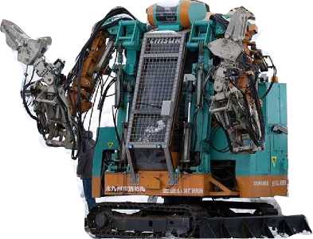
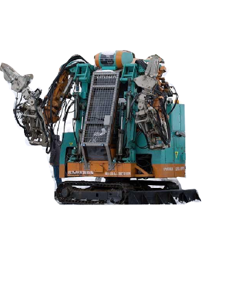
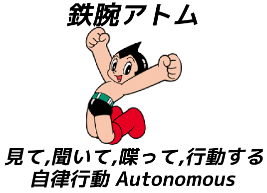
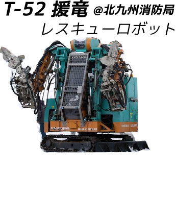
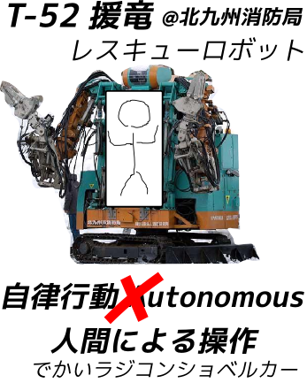
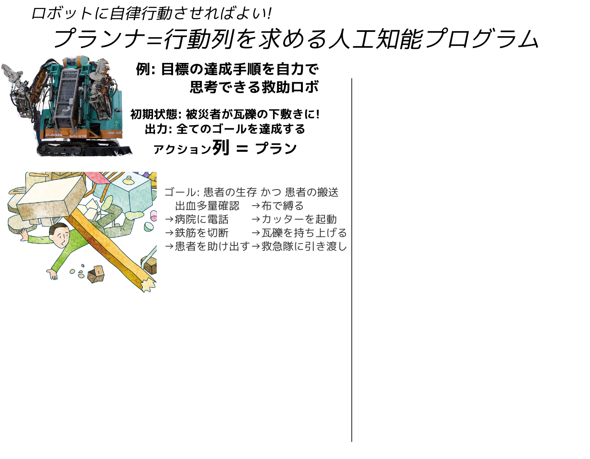
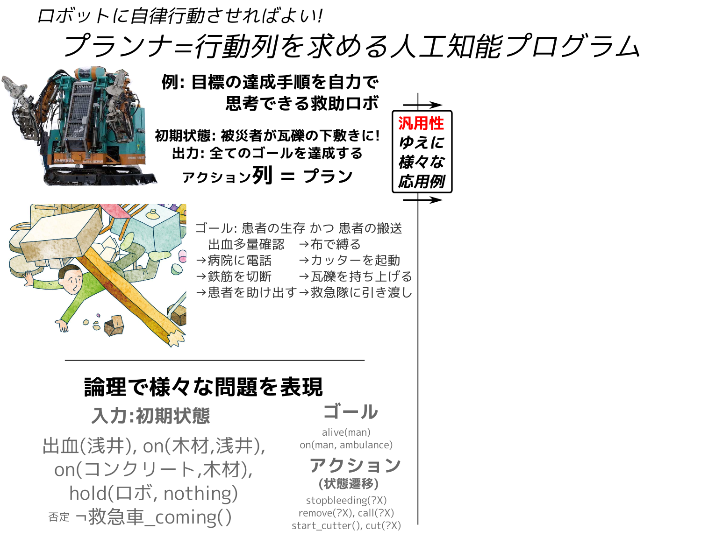
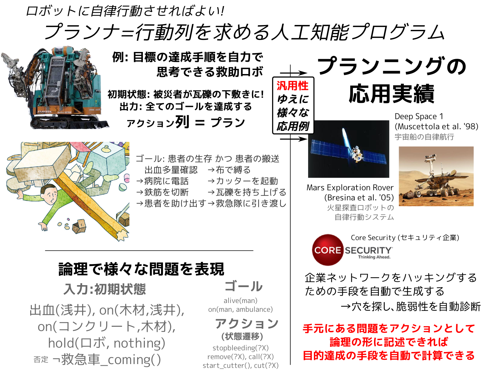
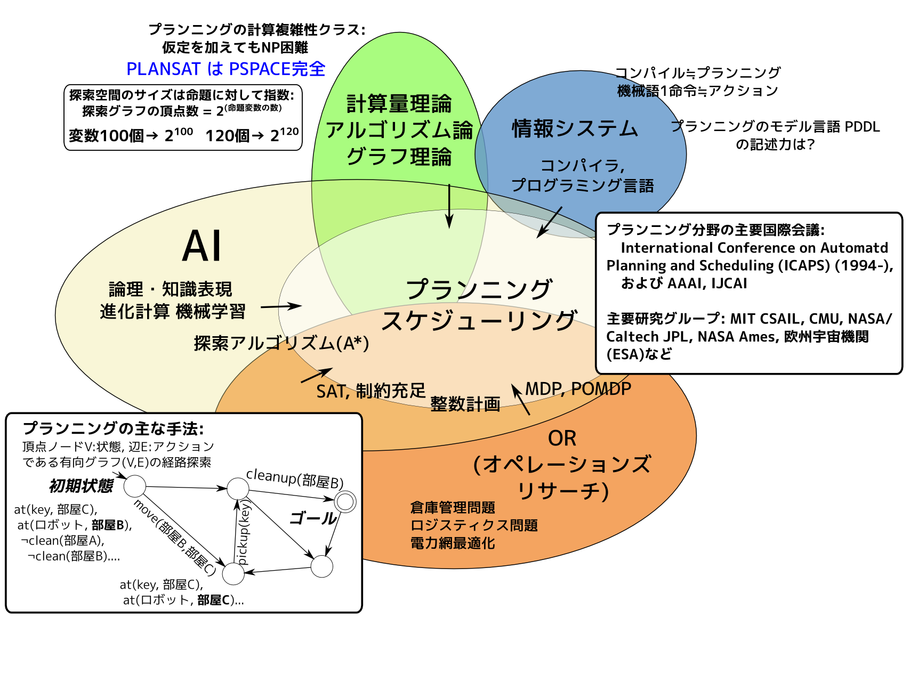
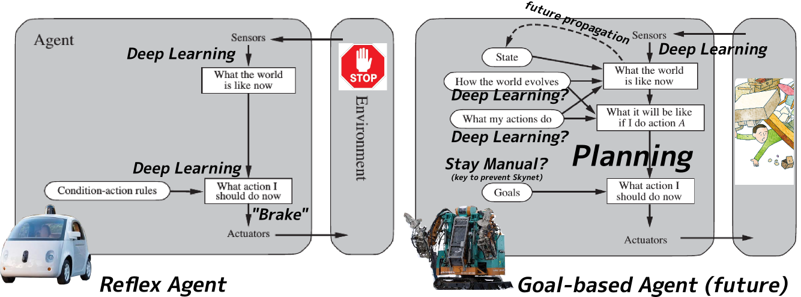

QE プレゼンテーション
Masataro Asai (1st yr Doctoral Student)
分野: 人工知能 推論・探索
専門: 高速プランニングアルゴリズムの開発
Congrats, AlphaGo!

My name is Masataro Asai, in this presentation, as other people do, Id like to give a brief introduction to my research field and what I do.
1 誰?

And let me introduce these robots. The guy in the left is Astro boy.
1.1 誰?
As you know, he is a famous manga superhero invented by Tezuka Osamu in 50s,
1.2 誰?

and he can think, hear, speak, act. he also has emotions.
1.3 誰?

In contrast, the guy in the right is a real robot that is actually in use @ fukuoka prefecture for the rescue purpose.. His name is T-52 Enryu, developped by a Japanese company Temzak. He is huge and powerful – about 4 meters in height and can carry things which is as heavy as 500kg. Well, so, in a sense, he is also a superhero in the real disastrous situation.
1.4 誰?
But does he have feelings or can he think? Can he even move around by his own?
1.5 誰?

No. It requires full human intervention — it is indeed operated by a driver who gets in or by a remote control. It is more like a super-sophisticated shovel car.
2 実際の大規模災害では非実用的 — 操縦士が足りない!

- そのままでは役に立たない!
Now the problem is : It's ok in small accidents but is impractical in the real, massive natural disaster which frequently occurs in Japan. The key resource is human — These special purpose vehicles require human intervention, thus they are useless without trained operators.
2.1 操縦士を増やせない – Human Resource and Training
- ✘ 時間 がかかる
- 訓練に ＞100時間, 必要な時だけ増やす のは不可能
- ✘ ￥￥￥￥ がかかる
- 訓練官、訓練場所、訓練用具
- ✘ 技術は 維持が重要
- 定期的な再訓練、長期的コスト、さらなるマニー
- ✘ 平時は 無駄 な技術
- 普段は意味がない – 無駄なマニー!
In a natural disaster, we need as many experienced operators as possible. However, it is virtually impossible due to several reasons.
First, training takes time. It is impossible to quickly increase the number of operators as needed, at the time of disaster.
Second, the money matters. Training a person costs a lot of money, including: the cost of maintaining a training center, the cost of additional vehicles for training, the cost of training the trainers, wages for trainers, etc.
Third, Skills need to be updated and maintained. You know, how about preparing the large number of operators in advance? No, the society cannot torelate the cost of keep training them. Operators may lose the skills and skills may become outdated.
Finally, in a normal situation, those skills are useless. It forces the society to waste a great amount of extra money.
3 だからこそ: 自動プランナ Automated Planner

研究テーマのプランニングは、ロボットに、人間の助けを借りず、いかに自律して行動させるかを扱います。 これをモデル化したプランニング問題は、具体的な行動の列を求める 組合せ最適化問題です。
プランニング問題のタスクは、 センサーから初期状態とゴールを受け取って、被災者を助ける正しい手順を出力することです。
たとえば、この図では男性が瓦礫に埋まって助けを求めています。 プランニング機能のあるロボットは、コレに対して「男性を助けよ」という大まかな指示を受けます。
4 だからこそ: 自動プランナ Automated Planner

指示の内容には、図のように初期状態とゴール、許可された行動のリストが入っています。 ロボットは、自動プランニングにより、人間の代わりに適切な行動を組み立てて、ゴールを自動で達成します。
5 だからこそ: 自動プランナ Automated Planner

プランニングは汎用な枠組みなので、災害救助以外にも様々な問題に適用することができます。 現実の応用例では「宇宙探査機運行問題」や「企業ネットワーク脆弱性問題」も表現できます。
このように、プランニングは、難しい問題を汎用性を失わずに解くことを目指します。
6 AIと自動プランニング の位置づけ – 理論 と 実応用 の中間
緑は 理論 、オレンジは 実応用 、 AI はその橋渡し (どれともかぶらない部分もある)
Automated Planning is a branch of Aritificial Intelligence.
It shares a lot of technology with Operations Research and Theoretical Computer Science, and is considered a bridge between pure theory and pure applications.

7 Q. Whats the difference between Deep Learning?
A. Possible, but different layer
Deep Learning, Machine Learning
- Subsymbolic Input
- images, voice, random text…
- 1-step Action Policy / Reflex agent
- Pablov's dog, self-driving cars
- red light → stop.
- Pedestrian → stop.
- Curves → brake.
Planning
- Symbolic Input/Output
- logic, objects, rules
- Reasoning about 1000 step future
- Rescue Robots solve puzzles under complex environment
8 Reflex Agent vs Goal-based Agents

AI's Ethics? — subject to the "users"